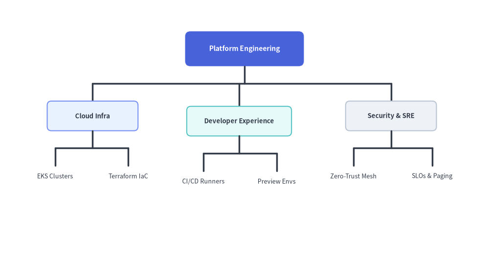

MindMap Component
The MindMapNode component renders multi-directional, radial mindmaps and hierarchical feature maps centered around a central root topic.
Branches can project to the left, right, top, or bottom, with automatic elbow connector routing.
1. Quick Example: Architecture Topology Map
from drawlib.canvas import setup
from drawlib.smartarts import MindMapNode
from drawlib.styles import Styles
setup(width=140, height=80)
root = MindMapNode(
"API Gateway",
shape="oval",
size=(28, 12),
style=Styles.PrimaryFlat,
text_style=Styles.WhiteBold,
line_style=Styles.DarkBold,
line_length=12.0,
horizontal_margin=4.0,
vertical_margin=4.0,
children=[
MindMapNode(
"Clients", branch="left", shape="rectangle", size=(20, 8), style=Styles.Neutral, text_style=Styles.DarkBold,
children=[
MindMapNode("Web Browser", shape="none", text_style=Styles.Dark),
MindMapNode("Mobile App", shape="none", text_style=Styles.Dark),
],
),
MindMapNode(
"Services", branch="right", shape="rectangle", size=(20, 8), style=Styles.SecondaryNeutral, text_style=Styles.DarkBold,
children=[
MindMapNode("Auth Service", shape="none", text_style=Styles.Dark),
MindMapNode("Order Service", shape="none", text_style=Styles.Dark),
],
),
],
)
root.draw(xy=(70, 40))

2. Imperative Construction (.add()) & Top-Down Hierarchy (branch="bottom", xy_shift)
Instead of passing nested children=[...] lists to the constructor, you can construct mindmaps and organization trees imperatively with parent.add(text, ...) -> MindMapNode. When calling root.draw(xy, branch="bottom"), all branches default to flowing top-down (-y). You can also fine-tune any node's placement relative to its auto-calculated position using xy_shift=(dx, dy).
from drawlib.canvas import save, setup
from drawlib.smartarts import MindMapNode
from drawlib.styles import Styles
setup(width=140, height=78)
root = MindMapNode(
"Platform Engineering",
shape="rectangle",
size=(34, 10),
style=Styles.PrimaryFlat.patch(shape_r=1.5),
text_style=Styles.WhiteBold.patch(text_size=10.0),
line_style=Styles.DarkBold,
line_length=10.0,
horizontal_margin=5.0,
vertical_margin=4.0,
)
# 1. Left Subtree: Cloud Infrastructure
infra = root.add(
"Cloud Infra",
size=(26, 8.5),
style=Styles.PrimaryNeutral.patch(shape_r=1.2),
text_style=Styles.DarkBold.patch(text_size=9.5),
)
infra.add("EKS Clusters", shape="none", text_style=Styles.Dark.patch(text_size=9.0))
infra.add("Terraform IaC", shape="none", text_style=Styles.Dark.patch(text_size=9.0))
# 2. Center Subtree: Developer Experience (nudged slightly downward with xy_shift)
devex = root.add(
"Developer Experience",
size=(30, 8.5),
style=Styles.SecondaryNeutral.patch(shape_r=1.2),
text_style=Styles.DarkBold.patch(text_size=9.5),
xy_shift=(0.0, -1.5),
)
devex.add("CI/CD Runners", shape="none", text_style=Styles.Dark.patch(text_size=9.0))
devex.add("Preview Envs", shape="none", text_style=Styles.Dark.patch(text_size=9.0))
# 3. Right Subtree: Security & SRE
sec = root.add(
"Security & SRE",
size=(26, 8.5),
style=Styles.Neutral.patch(shape_r=1.2),
text_style=Styles.DarkBold.patch(text_size=9.5),
)
sec.add("Zero-Trust Mesh", shape="none", text_style=Styles.Dark.patch(text_size=9.0))
sec.add("SLOs & Paging", shape="none", text_style=Styles.Dark.patch(text_size=9.0))
# Default branch direction in draw() is "bottom" (top-down org chart layout)
root.draw(xy=(70, 64), branch="bottom")
save()

3. Geometry, Cascading & Layout Mechanics
- Center Anchor
(cx, cy): The coordinate passed toroot.draw(xy=...)anchors the exact center of the root node. - Root Mandatory Parameters: The root
MindMapNodemust be initialized withstyle,text_style, andline_style(otherwiseroot.draw()raises aValueError). If omitted on the root,shapedefaults to"rectangle",sizeto(20.0, 8.0),horizontal_marginto4.0,vertical_marginto4.0, andline_lengthto10.0. All descendant nodes inherit any unassigned style, shape, size, or spacing parameter from their parent. - Directional Branching (
branch):"bottom"(default inroot.draw()): Sub-branches extend downward (-y), ideal for top-down org charts and WBS trees."top": Sub-branches extend upward (+y)."right": Sub-branches extend rightward (+x)."left": Sub-branches extend leftward (-x).- You can mix directions on the same root by setting
branch="left","right","top", or"bottom"on individual child nodes.
- Node Shapes & Automatic Text Sizing (
shape,size):"rectangle": Rectangular box with optional corner rounding (style.shape_r)."oval": Pill / ellipse container."none": Clean borderless text label. Whenshape="none"andsize=None,MindMapNodeautomatically measures the text width and height fromtext_style.text_size(including CJK wide-character compensation) so sibling labels never overlap.
- Layout & Spacing Parameters:
horizontal_margin: Horizontal gap between sibling subtrees when branching"bottom"or"top".vertical_margin: Vertical gap between sibling subtrees when branching"left"or"right".line_length: Orthogonal connector distance between parent and child hierarchy levels (with the right-angled fork junction placed atline_length / 2).xy_shift: Optional(dx, dy)coordinate offset applied after automatic layout to fine-tune a node's position.
4. API Reference
Constructor (MindMapNode)
MindMapNode(
text: str,
*,
branch: Literal["bottom", "top", "left", "right"] | None = None,
shape: Literal["rectangle", "oval", "none"] | None = None,
size: tuple[float, float] | None = None,
style: Style | None = None,
text_style: Style | None = None,
line_style: Style | None = None,
horizontal_margin: float | None = None,
vertical_margin: float | None = None,
line_length: float | None = None,
xy_shift: tuple[float, float] | None = None,
children: list[MindMapNode] | None = None,
show: bool = True,
)
| Parameter | Type | Default | Description |
|---|---|---|---|
text |
str |
(Required) | Text content displayed in this node. |
branch |
Literal["bottom", "top", "left", "right"] | None |
None |
Branch direction for this node/subtree (inherits parent or draw(branch=...) default if None). |
shape |
Literal["rectangle", "oval", "none"] | None |
None |
Node shape (root defaults to "rectangle" if None; children inherit parent shape). |
size |
tuple[float, float] | None |
None |
Node (width, height) (root defaults to (20.0, 8.0); auto-sized from text when shape="none" and size=None). |
style |
Style | None |
None |
Node shape style (required on root; inherited by children if None). |
text_style |
Style | None |
None |
Node text style (required on root; inherited by children if None). |
line_style |
Style | None |
None |
Connector line style (required on root; inherited by children if None). |
horizontal_margin |
float | None |
None |
Horizontal gap between sibling subtrees (root defaults to 4.0). |
vertical_margin |
float | None |
None |
Vertical gap between sibling subtrees (root defaults to 4.0). |
line_length |
float | None |
None |
Connector span between parent and child levels (root defaults to 10.0). |
xy_shift |
tuple[float, float] | None |
None |
Optional (dx, dy) offset applied to this node after two-pass layout calculation. |
children |
list[MindMapNode] | None |
None |
Initial list of child MindMapNode instances. |
show |
bool |
True |
Whether to render this node and its connectors (preserves subtree layout bounding boxes when False). |
Adding Child Nodes (.add())
node.add(
text: str,
*,
branch: Literal["bottom", "top", "left", "right"] | None = None,
shape: Literal["rectangle", "oval", "none"] | None = None,
size: tuple[float, float] | None = None,
style: Style | None = None,
text_style: Style | None = None,
line_style: Style | None = None,
horizontal_margin: float | None = None,
vertical_margin: float | None = None,
line_length: float | None = None,
xy_shift: tuple[float, float] | None = None,
show: bool = True,
) -> MindMapNode
Creates a new child MindMapNode from text: str (note: .add() takes a string text, not a MindMapNode instance), appends it to node.children, and returns the newly created child MindMapNode.
Drawing & Mutable Properties
root.draw(
xy: tuple[float, float],
branch: Literal["bottom", "top", "left", "right"] = "bottom",
scale: float = 1.0,
) -> None
xy: Center coordinate(cx, cy)of the root node.branch: Fallback branch direction ("bottom","top","left","right", default"bottom") used whenroot.branchisNone.scale: Proportional scale factor aroundxy(> 0, default1.0).- Mutable Node Properties:
node.text: strnode.branch: Literal["bottom", "top", "left", "right"] | Nonenode.shape: Literal["rectangle", "oval", "none"] | Nonenode.size: tuple[float, float] | Nonenode.style: Style | Nonenode.text_style: Style | Nonenode.line_style: Style | Nonenode.children -> list[MindMapNode]node.show: bool